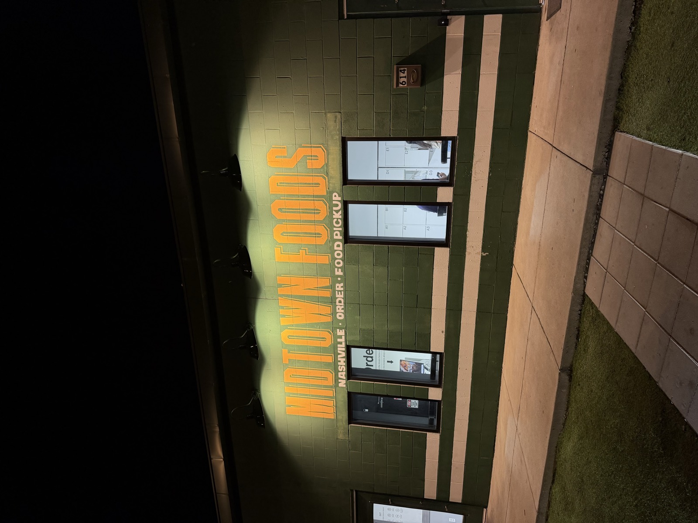
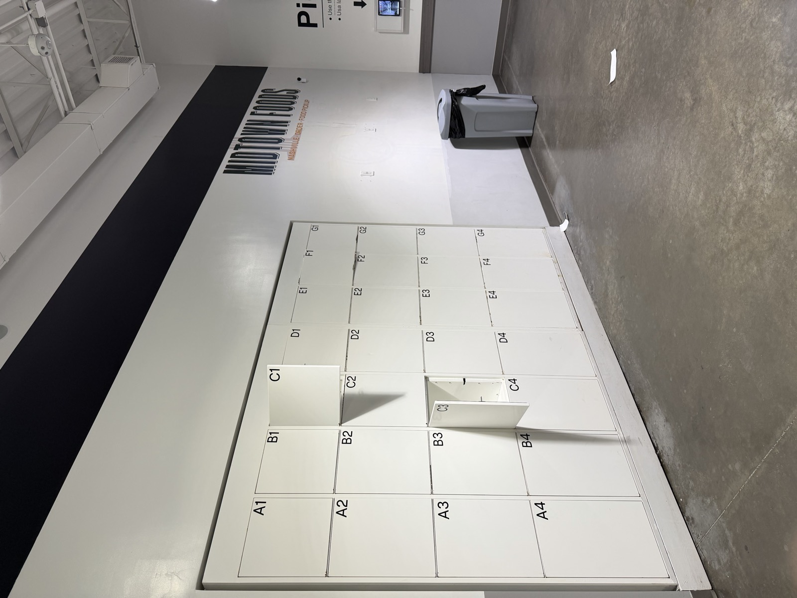
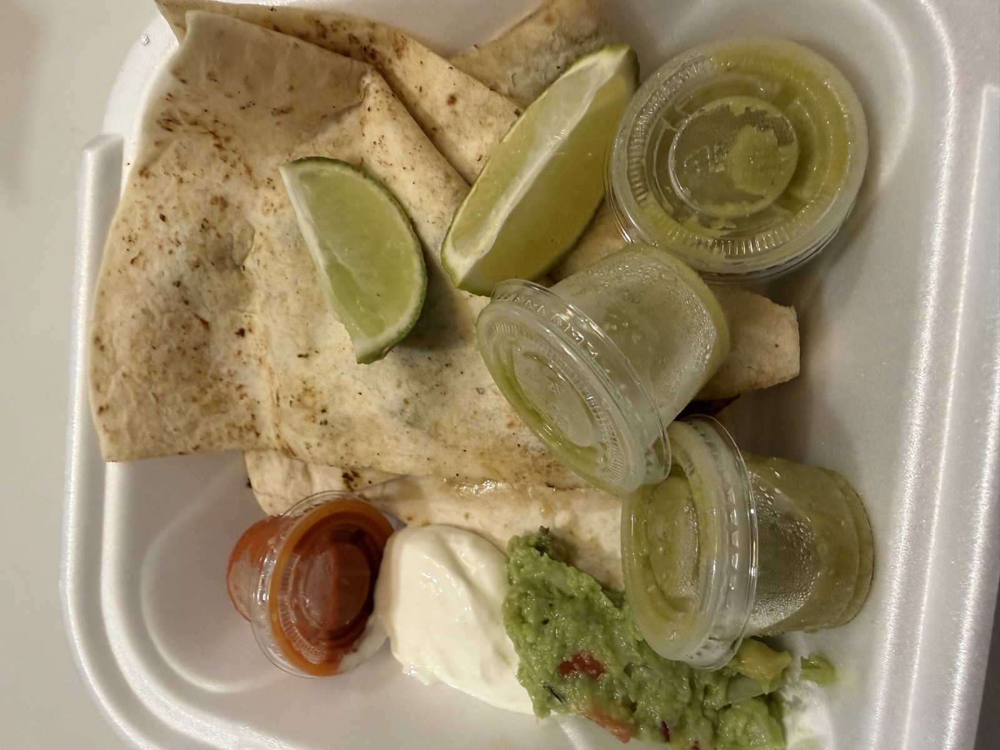
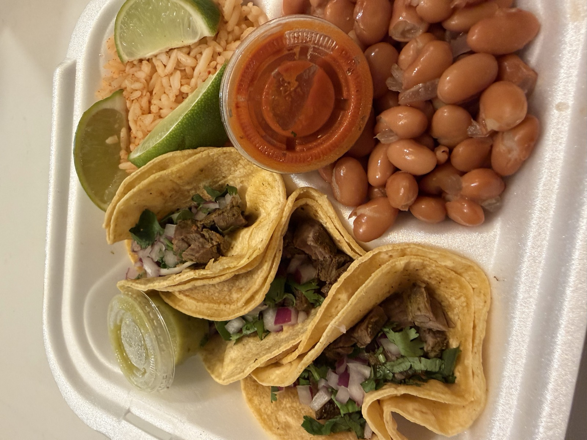
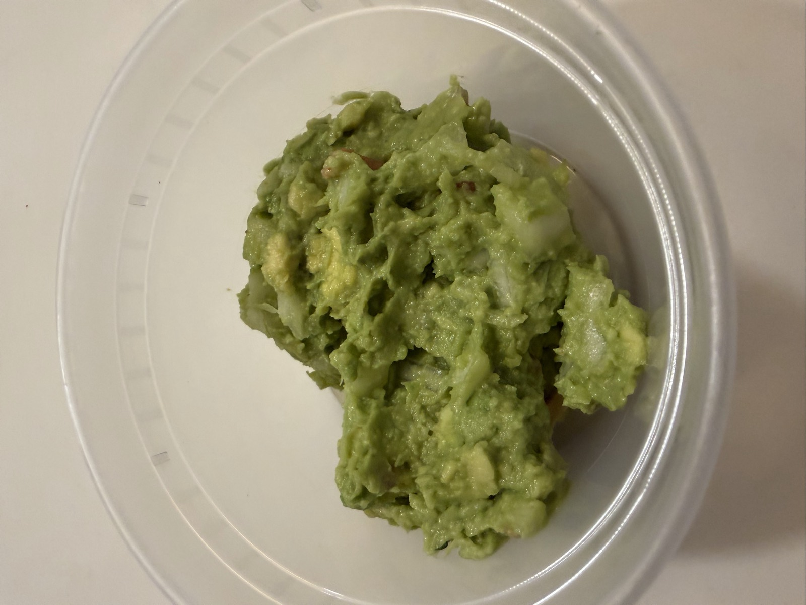

- ⭐ Sam Score: 2.5/10
- 📅 Visited: September 20, 2026
- 📍 Address: 614 18th Ave N, Nashville, TN 37203
- 💰 Price: $$
- 🍽️ Cuisine: Mexican
- 🚗 Parking: Free parking
- 📞 Phone: (615) 801-4520
My Video Review
About Sabor Corazón
Sabor Corazón is a Mexican kitchen working out of Midtown Foods on 18th Avenue North, a food pickup building rather than a restaurant. You order ahead and collect the bag from a numbered locker in the lobby, with no dining room and nobody at a counter.
What I Ordered
The Steak Quesadilla, the Steak Taco Plate, and Chips and Guac.
Photos





Pros & Cons
👎 Cons
- Long wait
- No customer service to help